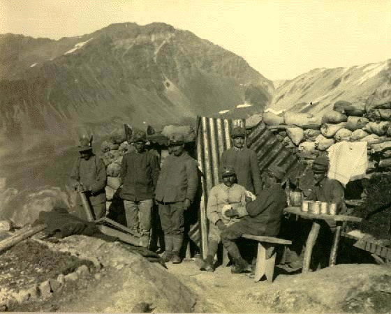

SOLDATI IN TRINCEA
INTRODUZIONE 
SOLDATI E UFFICIALI
LETTERATURA E POESIA DI GUERRA
LA TRINCEA
LA VITA DI TRINCEA
IL RANCIO
TEMPO LIBERO E DISCIPLINA
LA SUPERSTIZIONE
LA SANITA' MILITARE
CONCLUSIONE